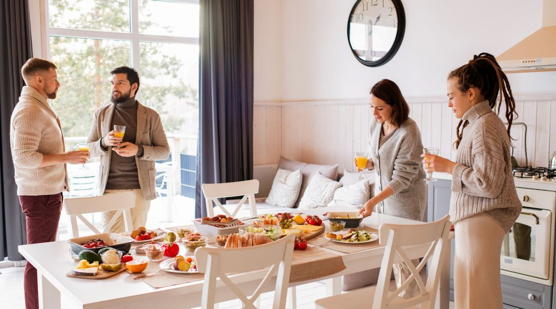

Quick and Budget-Friendly Meals for Students

Photo: Alexy Almond / Pexels
When time and money are short, a few simple recipes and a well-stocked pantry go a long way. Here are meal ideas that take 15 to 30 minutes, with basic food-safety tips.
A basic pantry
Rice, pasta, oats, lentils, canned chickpeas and beans, canned tomatoes, oil, onions, garlic, eggs, frozen vegetables and a few spices make dozens of meals.
Quick ideas
- Pasta with tomato sauce, frozen vegetables and a little cheese.
- Fried rice with vegetables and a thoroughly cooked egg.
- Well-cooked omelet or scrambled eggs with vegetables and bread.
- Red lentil soup with carrots, onion and broth, ready in about 25 minutes.
- Bean, vegetable and cheese wraps.
- Chickpea salad with cucumber, tomato and olive oil.
Cook once, eat several times
Double the recipe and refrigerate or freeze half. Refrigerate within two hours of cooking and eat within two to three days.
Sandwiches and packed lunches
Sandwiches with meat, eggs or chicken should not sit for hours at room temperature. Use an insulated bag with an ice pack, or choose fillings that keep well, such as hummus, cheese and vegetables.
Using the microwave
It reheats well but not always evenly. Cover the dish, stir halfway and check that the food is hot throughout. Use only containers labeled microwave-safe.
Budget tips
Compare unit prices, prefer seasonal or frozen produce, and avoid prepared meals, which usually cost more for the same amount of food.
With a little planning you can eat varied, healthy meals and stay in control of your budget.
Recommended products
As an Amazon Associate, I earn from qualifying purchases.